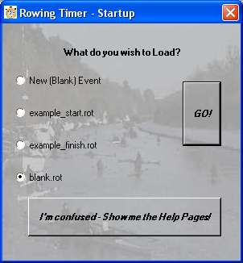

Rowing Timer

Thankyou for trying Rowing Timer.
I hope you will find it to be a flexible and useful piece of software for
timing of processional head races.
It is freeware, do with it as you please. However, if you do find the program to be of use
please consider making a small donation (suggest £10) to Inverness Rowing Club.
Do let me know of any problems or suggestions, I would be
delighted to get feedback of any type.
Best Regards
Neil Wallace 2nd November 2005.
How to use Rowing Timer
Start Screen.
The image on your right is what you should see on starting the program.
I would suggest the "Example Event - Crews yet to Start" as the easiest way to Demo the program.
What this will give you is an example of how the program looks and operates once the crew information has been entered.
Another option you will see (on subsquent use) is a shortcut back into your last saved event. This is useful as you can quickly "continue where you left off" if you shut the program - purposefully or otherwise!